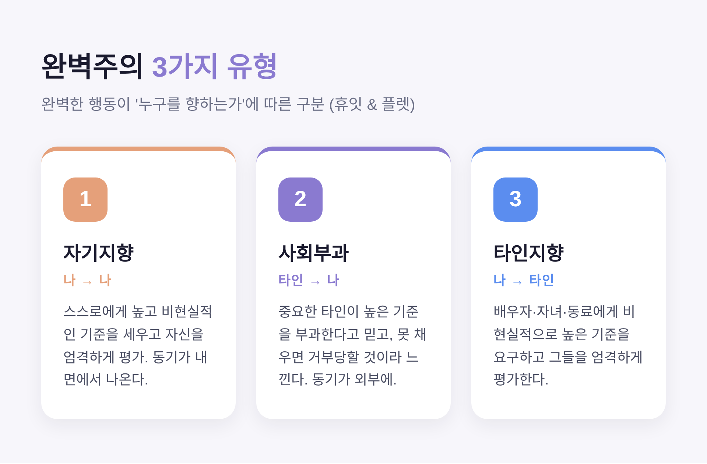
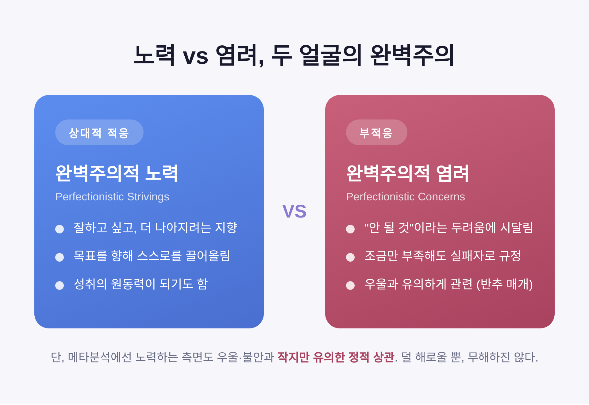
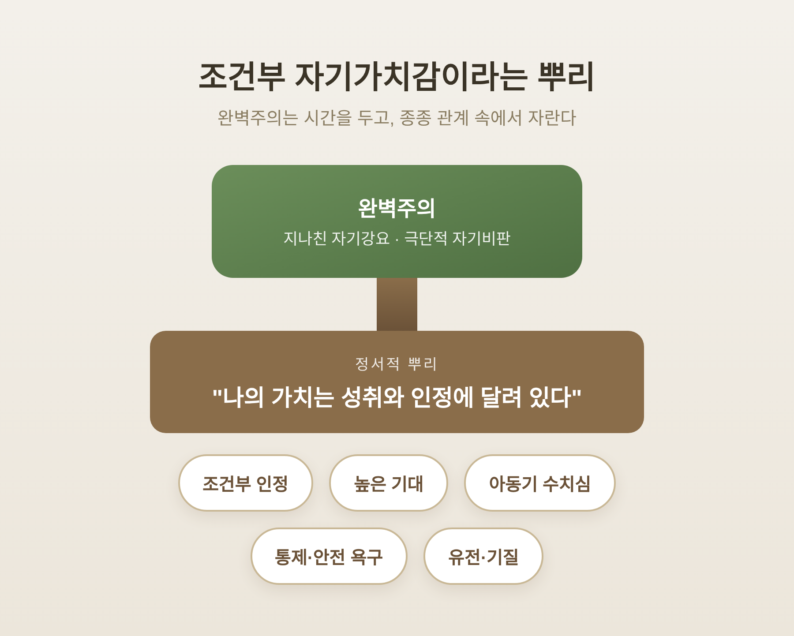
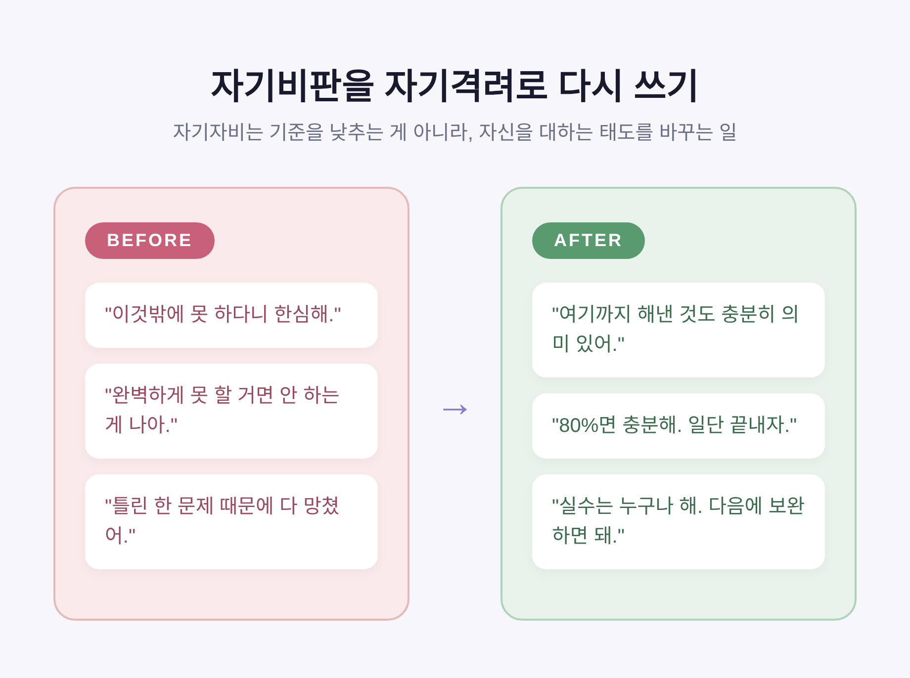

완벽주의에 지친 마음, '잘해야 한다'는 압박에서 벗어나기
늘 잘해야 한다는 생각에 마음이 무거우셨다면, 이 글이 작은 실마리가 되었으면 합니다.
오늘은 완벽주의에 지친 마음을 다뤄 보려 합니다. 완벽주의가 무엇인지, 왜 우리를 힘들게 하는지, 그리고 '충분히 괜찮은 나'로 돌아오는 길은 어디에 있는지 차례로 정리하겠습니다.
먼저 핵심부터 말씀드립니다. 모든 완벽주의가 똑같이 해로운 것은 아닙니다. 자신을 혹독하게 몰아붙이는 '부적응적' 완벽주의가 우울·불안·번아웃과 더 깊이 얽혀 있습니다. 그리고 이 고리는 자각과 자기자비, 그리고 필요할 때의 전문가 도움으로 느슨하게 풀 수 있습니다.
■ 완벽주의란 무엇인가
완벽주의는 "끊임없이 노력해야 하는 더 완벽한 상태가 존재한다"고 믿는 신념입니다.
이 신념은 지나친 자기 강요, 극단적 자기비판, 자신의 결함을 받아들이지 못하는 태도로 드러납니다.
심리학자 휴잇과 플렛은 완벽한 행동이 '누구를 향하는가'에 따라 세 유형으로 나눴습니다.
- 자기지향 완벽주의: 스스로에게 높고 비현실적인 기준을 세우고 자신을 엄격하게 평가합니다. 동기가 주로 내면에서 나옵니다.
- 사회부과 완벽주의: 부모 등 중요한 타인이 높은 기준을 부과한다고 믿고, 충족하지 못하면 거부당할 것이라 느낍니다. 동기가 외부에 있습니다.
- 타인지향 완벽주의: 배우자·자녀·동료에게 비현실적으로 높은 기준을 요구하고 그들을 엄격하게 평가합니다.
세 유형은 향하는 방향이 다를 뿐, 모두 '완벽'이라는 같은 압박에 매여 있습니다.

■ 적응적 완벽주의와 부적응적 완벽주의
유형과는 별개로, 완벽주의를 두 차원으로 보는 접근도 널리 쓰입니다.
하나는 '완벽주의적 노력'입니다. 잘하고 싶어 하고, 더 나아지려는 지향이지요. 비교적 적응적인 측면입니다.
다른 하나는 '완벽주의적 염려'입니다. "안 될 것"이라는 두려움에 시달리고, 조금이라도 부족하면 자신을 실패자로 규정하는 태도입니다. 부적응적인 측면입니다.
정신건강에서 둘의 차이는 분명합니다. 여러 연구가 부적응적 완벽주의만이 우울과 유의하게 관련된다고 봤습니다. 이때 끝없이 곱씹는 '반추'가 우울로 가는 인지적 다리 역할을 합니다.
다만 한 가지는 짚어 두겠습니다. '적응적 완벽주의는 완전히 무해하다'고 단정하기는 어렵습니다. 대규모 메타분석에서는 노력하는 측면도 우울·불안과 작지만 유의한 정적 상관을 보였습니다. 상대적으로 덜 해로울 뿐, 무해한 것은 아닙니다.

■ 불안·우울·번아웃과의 연결
완벽주의가 마음을 어떻게 갉아먹는지는 큰 규모의 연구로 확인됩니다.
416개 연구, 11만 명 이상을 분석한 메타분석에서, 완벽주의적 염려는 불안·강박·우울 증상과 중간 크기의 상관을 보였습니다. 노력하는 측면도 작지만 유의한 상관이 있었습니다.
우울로 이어지는 길에는 매개가 있습니다. 스트레스와 사회적 단절이 완벽주의와 우울 사이를 잇는다는 연구가 있습니다.
번아웃과의 연관도 보고됩니다. 사회부과 완벽주의는 정서적·신체적 소진과 연결됩니다. 한국 연구에서는 부적응적 완벽주의가 높을수록 우울·불안이 높고, 그것이 다시 피로 수준을 높였습니다.
예전 세대보다 지금 세대가 더 힘든 면도 있습니다. 1989년부터 2016년까지의 자료를 본 연구에서, 세 유형의 완벽주의가 모두 시간에 따라 늘어났습니다. 요즘 젊은 세대일수록 타인이 자신에게 더 많은 것을 요구한다고 느낍니다.
■ 그 마음은 어디서 왔을까
완벽주의는 하루아침에 생기지 않습니다. 시간을 두고, 종종 부모-자녀 관계 속에서 형성됩니다.
'사회적 기대 모델'은 이렇게 설명합니다. 부모의 사랑과 인정을 성취에 따라 조건부로 받는다고 느낀 아이는, 실패에 대한 두려움과 완벽을 향한 욕구를 키울 수 있습니다.
아동기의 부정적 경험과 그로 인한 수치심도 한 뿌리입니다. 완벽주의가 통제감과 안전감을 확보하려는 대처 기제로 나타나기도 합니다.
물론 원인은 하나가 아닙니다. 유전적 소인과 환경, 성격이 함께 작용합니다. 유전과 양육, 트라우마 중 무엇이 더 크게 작용하는지는 자료마다 강조점이 다르며, 단일한 결론으로 묶기는 어렵습니다.
여기서 자주 언급되는 정서적 뿌리가 '조건부 자기가치감'입니다. "나의 가치는 성취와 인정에 달려 있다"는 믿음이지요. 상담은 바로 이 뿌리를 다룹니다.

■ 일상에서 나타나는 신호
부적응적 완벽주의는 거창한 사건이 아니라 작은 일상에서 모습을 드러냅니다.
- 일을 끝없이 미루다 결국 시작조차 못 하는 일이 반복됩니다.
- 세부 사항을 고치고 또 고치느라 제때 마치지 못하고 자책합니다.
- '완벽하게 못 할 바엔 안 한다'며 회피하고, 시작 전 준비만 과하게 합니다.
- 끝낸 뒤에도 만족이 없고 결함만 눈에 들어옵니다. 칭찬도 잘 받아들이지 못합니다.
연구와 상담 자료에서 흔히 보고되는 모습을 일반화하면 이렇습니다. 시험에서 좋은 결과를 내고도 틀린 한 문제에만 몰두해 소진되는 경우가 있습니다. 보고서를 마감 직전까지 붙잡고 고치다 번아웃과 미루기의 악순환에 빠지기도 합니다. 가까운 사람에게 높은 기준을 요구해 관계가 긴장되는 일도 있습니다.
여기 적은 모습은 특정 개인의 사례가 아니라, 흔히 관찰되는 양상을 합친 일반적 예시입니다.
회복의 출발점은 의외로 단순합니다. "내가 완벽주의로 힘들어하고 있다"는 자각입니다.
■ '충분히 괜찮은 나'로 돌아오는 길
근거 기반의 접근부터 살펴보겠습니다.
인지행동치료(CBT)는 완벽주의를 다루는 1차 도구로 꼽힙니다. 비현실적 기준과 자기비판을 유지시키는 생각·행동 패턴을 찾아 바꾸며, 중간에서 큰 효과크기가 보고됩니다. 주요 기법은 이렇습니다.
- 인지 재구조화: '전부 아니면 전무'라는 이분법 사고를 찾아 도전하고, 가혹한 자기비판을 다시 씁니다.
- 행동 실험: 두려워하는 결과가 실제로 일어나는지 검증합니다.
- 실수 노출: 작은 실수와 불완전을 일부러 허용해, "완벽하지 않아도 안전하다"를 몸으로 배웁니다.
마음챙김도 도움이 됩니다. 완벽주의적 생각을 '사실'이 아니라 '하나의 정신적 사건'으로 보고 거리를 두는 훈련입니다.
자기자비도 빼놓을 수 없습니다. 심리학자 크리스틴 네프는 세 요소를 말합니다. 자기친절, 보편적 인간성(나의 결함도 인간 공통의 경험이라는 인식), 그리고 마음챙김입니다.
여기서 오해를 풀어 두겠습니다. 자기자비는 기준을 낮추는 일이 아닙니다. 목표는 여전히 높게 잡되, 늘 도달하지 못할 수 있음을 인정하고 받아들이는 태도입니다. 자기자비가 높을수록 자기비판·우울·불안·실패 공포·완벽주의는 줄어드는 것으로 보고됩니다.
일상에서 시도해 볼 만한 작은 실천도 있습니다.
- 완벽 대신 '충분히 좋음', 80% 완료를 기준으로 둡니다.
- 제한 시간을 정해 무한 수정을 끊습니다.
- 자기비판 문장을 자기격려 문장으로 바꿔 적습니다.
- 휴식·수면·운동을 일정에 고정해 번아웃을 예방합니다.

■ 혼자 애쓰지 않아도 됩니다
지금까지의 이야기는 일반적인 심리 정보입니다. 전문 상담이나 치료를 대체하지는 않습니다.
완벽주의로 인한 우울·불안·번아웃이 심하거나, 일상 기능에 큰 지장이 있다면 자가 노력만으로 버티지 않으시길 권합니다. 정신건강의학과나 전문 심리상담의 도움을 받는 편이 안전합니다.
상담은 자기비판의 악순환을 끊고, 성취와 무관하게 자신을 받아들이는 연습을 함께해 줍니다. 도움을 청하는 일은 약함이 아니라, 자신을 돌보는 분명한 한 걸음입니다.
끝으로 한 마디만 더 드리겠습니다.
완벽주의의 반대말은 게으름이 아닙니다. — '충분히 괜찮은 나'를 받아들이는 용기입니다.
오늘 한 가지만 덜 고치고 자리에서 일어나 보신다면, 그 작은 빈틈에서 마음은 조금 더 숨을 쉴 것입니다.